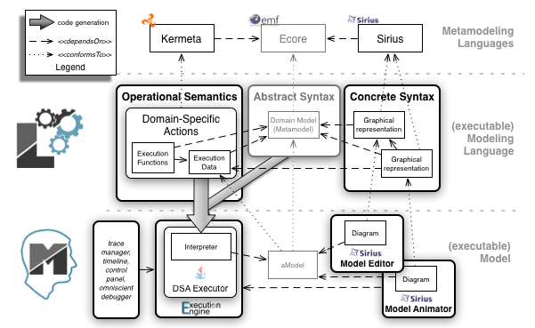
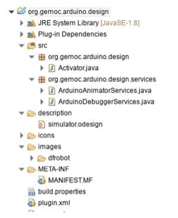
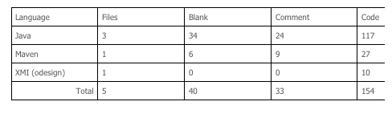

Domain-specific models are used in the development processes to reason and assess specific properties over the system under development as early as possible. This usually leads to a better and cheaper design as more alternatives can be explored. While many models only represent structural aspects of systems, a large amount express behavioral aspects of the same systems. Behavioral models are used in various areas (e.g., enterprise architecture, software and systems engineering, scientific modeling…), with very different underlying formalisms (e.g., business processes, orchestrations, functional chains, scenarios, protocoles, activity or state diagram, etc.).
To ensure that a behavioral model is correct with regard to its intended behavior, early dynamic validation and verification (V&V) techniques are required, such as simulation, debugging, model checking or runtime verification. In particular, debugging is a common dynamic facility to observe and control an execution in order to better understand a behavior or to look for the cause of a defect. Standard (stepwise) debugging only provides facilities to pause and step forward during an execution, hence requiring developers to restart from the beginning to give a second look at a state of interest. Omniscient debugging extends stepwise debugging by relying on execution traces to enable free traversal of the states reached by a model, thereby allowing designers to “go back in time.”.
Debugging, and all dynamic V&V techniques in general, require models to be executable, which can be achieved by defining the execution semantics of modeling languages (i.e. DSLs) used to describe them. The execution semantics of a modeling language can be implemented either as a compiler or as an interpreter to be applied on models conforming to the modeling language.
A compiler consist into generating executable code through code generation, usually targeting an execution environment that provide the tools of interest for the modeling language under development (virtual machine, debugger, simulator, checkers…). While this approach allows language designers to reuse existing, possibly efficient, tools for new modeling languages, it comes with two difficulties: the definition of the execution semantics in terms of the targeted execution environment whose the concepts (e.g., classes, methods, etc.) might have nothing to do with the domain-specific concepts of the initial modeling language, and the need of a back-annotation mechanism to trace back the execution results in terms of the initial model.
An interpreter consist into implementing a virtual machine associated to the modeling language, which is in charge of executing any conforming models. The interpreter can be implemented using any action language and consist into the definition of both the data structure of the execution state, and in-place transformations of such an execution state according to a given model. These transformations can directly manipulate the concepts of the modeling language in order to express their execution semantics, and their effect in terms of the execution state. The execution state can be either an extension of the syntax of the modeling language (e.g., the execution state of a statechart could be captured with an additional collection of the current states) or a separate data structure defined itself by its own metamodel (e.g., the execution state of a Petri net represented as a matrix). While the main benefit of this approach is to define the execution semantics directly in terms of the concepts of the modeling language, the main drawback is the necessity for any new modeling language to implement all the tooling using the execution semantics, e.g. debugger. Developing such a complex tool for any modeling language remains a difficult and error prone task.
Despite the specificities of each modeling language captured into the syntax and the execution semantics, it is possible to identify a common set of debugging facilities for all modeling languages: control of the execution (pause, resume, stop), representation of the current state during the execution (i.e., model animation), breakpoint definition, step into/over/out and step forward/backward.
Here Sirius Animator comes!
To drastically reduce the development cost of domain-specific debuggers, Sirius Animator provides a tool-supported approach to complement a modeling language with an execution semantics, and automatically get an advanced and extensible environment for model simulation, animation and debugging.
Sirius Animator provides a modular approach to complement an Ecore metamodel with:
Both are automatically deployed, together with a generated efficient execution trace metamodel, into an advanced omniscient debugging environment providing:

Let’s go through an example: bringing simulation and animation capabilities to Arduino Designer.
Arduino Designer is a simple tooling based on Sirius which provide a modeling language to graphically design programs (namely sketches) based on a given hardware configuration (arduino with sensors and actuators). Once a program is defined the user can automatically deploy it on an actual arduino. Behind the scene Arduino Designer will generate the .ino files, launch the compiler and upload the binary. The simulation and animation capabilities provide a convenient way to debug sketches at the level of abstraction provided by the modeling language, without having to systematically compile and deploy the binary on an arduino. This helps the developer to minimize the round-trip between the design of the sketch and the test of the program, and to design the sketch without having necessarily the arduino.
The sources of the following example are available here.
The modeling language covers hardware and software aspects. An excerpt of the metamodel is shown in the following figure. A Project is composed of a Hardware (a particular configuration of an arduino composed of Modules) and a Sketch (program to be executed on the associated configuration of an arduino).
Once we have defined the metamodel, one can expect to examine how a conforming model (program and hardware) behaves step by step. One could even simulate interactions, and all of that without having to compile and deploy on the actual hardware. Instead of defining all the interpretation logic using pure Java code, we provide specific Xtend active annotations to seamlessly extend an Ecore metamodel with dynamic information related to the execution and the execution steps (org.gemoc.arduino.sequential.operationalsemantics). The annotation @Aspect allows to re-open a concept declared in an Ecore metamodel, and to add new attributes / references corresponding to the dynamic information, and operations corresponding to the execution steps. These execution steps are usually defined according to the interpreter pattern, traversing the metamodel to declare the interpretation of instances. The operations corresponding to specific execution steps (i.e., on which we would pause the execution, hence defining the granularity of the possible step-by-step execution) must be declared using the annotation @Step, and the starting point of the execution must be declared using the annotation @Main.
From these annotations and the logic defined with Xtend we generate the corresponding code so that :
It remains the definition of the graphical animation layer itself! The animator plugin (org.gemoc.arduino.sequential.design) is responsible for providing customizations to the diagram editor to adapt the shapes and colors based on the runtime data. It rely on the customization capabilities of Sirius :
In the end, the plugin contributing the animation capabilities is quite small:


The following figure shows the debugging environment automatically obtained from the design of the modeling language as previously described. The debugging environment is launched from a right click > debug on the model. The debugging environment is fully integrated with the Eclipse debug UI and provide the usual debugging facilities including:
In addition, the debugging environment provides advanced features related to omniscient debugging such as an efficient management and visualization of the execution trace, the possibility to restore the model in any state previously reached during the execution, and step backward facilities (step backward into/over/out).
Finally, the multi-dimensional timeline offers one specific execution trace per dynamic information. This allows the developer to navigate through the global execution trace while focusing only on the changes of a particular dynamic information represented in the variable view.
The technologies required to put this in action are small dedicated components (all open-source) at a “proof of concept” maturity level extending proven components: EMF, Eclipse Sirius, Eclipse Debug, Xtend. We’ve been able to try out those technologies through different use cases, the natural next step is to validate and mature further some of those technologies through an industrial pilot project. Feel free to contact us if you have such an opportunity.
{kind=link}
{kind=link}
{kind=link}
{kind=link}
{kind=link}
{kind=link}
{kind=link}
{kind=link}